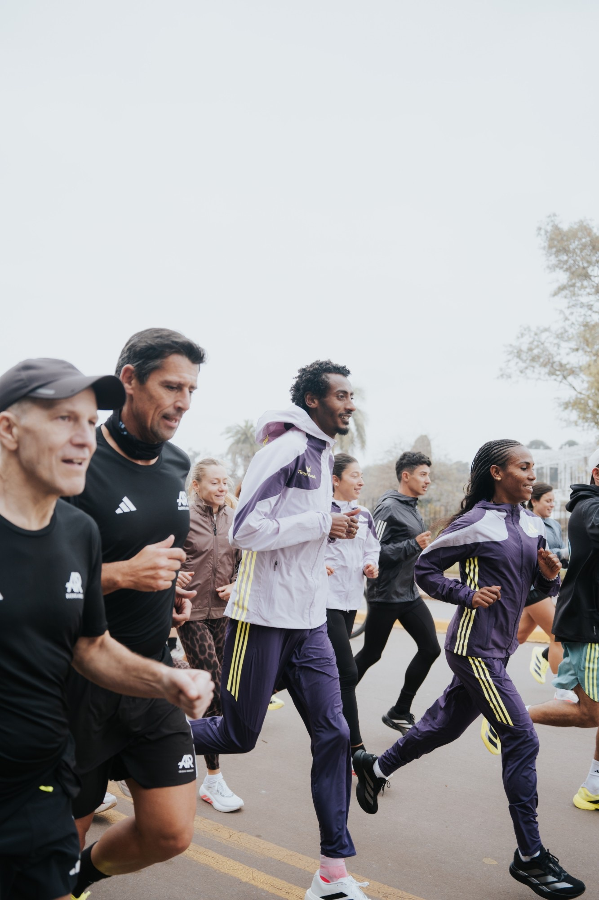
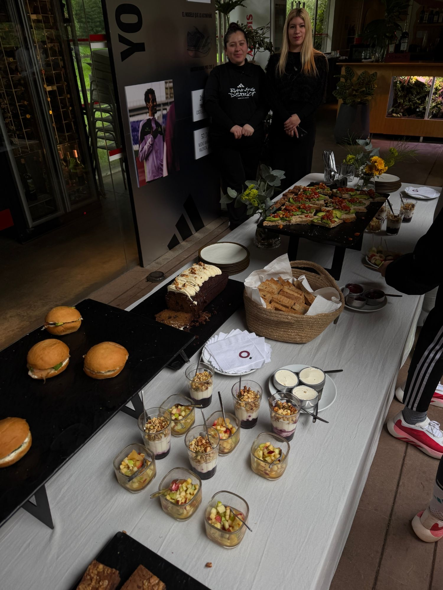
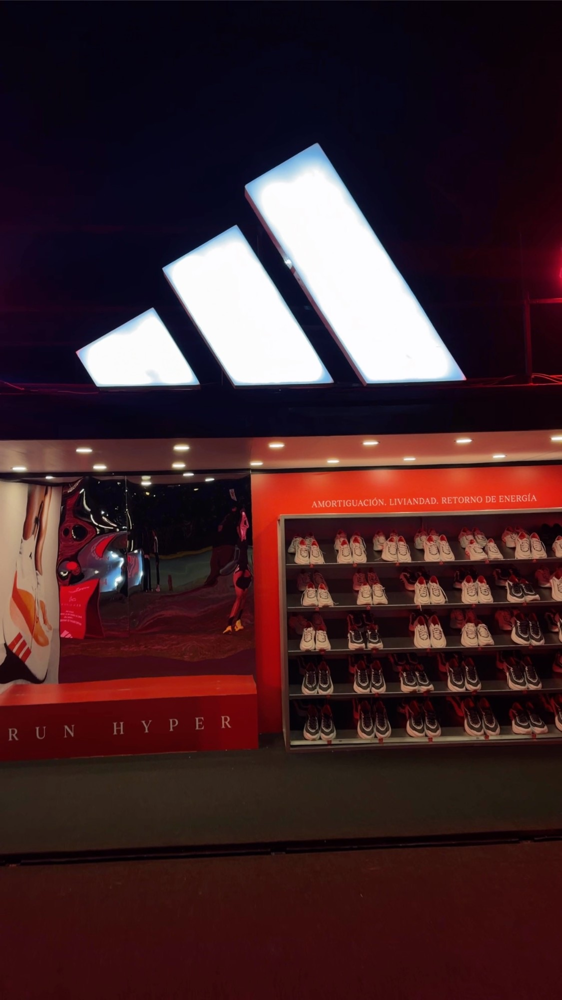

adidas Buenos Aires Half Marathon
- Client
- adidas
- Location
- Buenos Aires, Argentina
- Year
- 2026
- Type
- Race week coverage
56:51 Half marathon world record, set by Yomif Kejelcha on race weekend.
Race week around the adidas Buenos Aires Half Marathon. Saiigo covered the build-up from the inside: a shakeout run with adidas athletes and the local running community, a talk on stage and the moments around them, through to race day.



What we did
Content and community — on-the-ground coverage through race week, and bringing the local running community into the build-up.
Delivered
- Reels
- Photo coverage
- Instagram stories
Tell us about your brief.
Tell us what you’re working on, where it’s happening and what kind of support you’re looking for.
Email Saiigo Studio